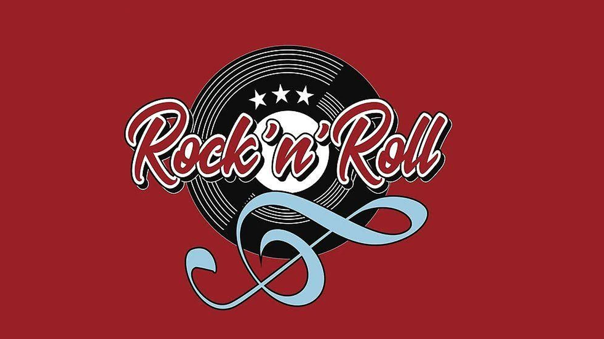

ROCK & ROLL
El rock and roll es un género musical de ritmo marcado, derivado de una mezcla de diversos géneros de música folclórica estadounidense y popularizado desde los años 50.
Rock and roll es un género musical nacido en la década de 1950 aproximadamente, en el seno de la sociedad norteamericana, ampliamente popularizado por Elvys Presley. Es el resultado del intercambio entre otros géneros predecesores, tales como el rhythm and blues, el blues, el country, el western, el doo wop y el hillbilly.
La expresión "rock and roll" es propia de la lengua inglesa. Se sabe que era utilizada en la cultura naval antigua para referir los movimientos del barco. Así, "rock" se referiría a los movimientos atrás y adelante, mientras que "roll" se referiría a los laterales. Pero en la cultura afroamericana, la expresión "rock" o "rocking" aludía a los estados de trance experimentados en sus rituales, asociados normalmente a expresiones musicales rítmicas.
Entre sus artistas y grupos más destacados se encuentran: Elvys Presley, Jerry Lee Lewis, Buddy Holly, Chuck Berry, The Beatles, The Rolling Stones, Bill Haley and His Comets, Johnny Cash, The Beach Boys, etc. Los instrumentos más utilizados en este son: batería, guitarra eléctrica, guitarra acústica y voz.
